SnapTrack
Gewicht scannen
SnapTrack wurde entwickelt, um das tägliche Erfassen von Gewicht und Körperfett zu vereinfachen. Die App nutzt die iPhone-Kamera, um digitale Waagenanzeigen zu scannen und speichert Gewichts- und Körperfettdaten automatisch in der Health-App.
In den Einstellungen können die Erkennungsparameter für Digitalanzeigen angepasst und das Körperfett-Scanning deaktiviert werden.
Im App Store ansehen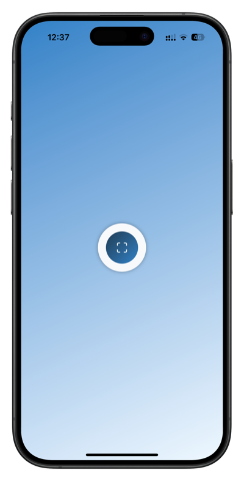
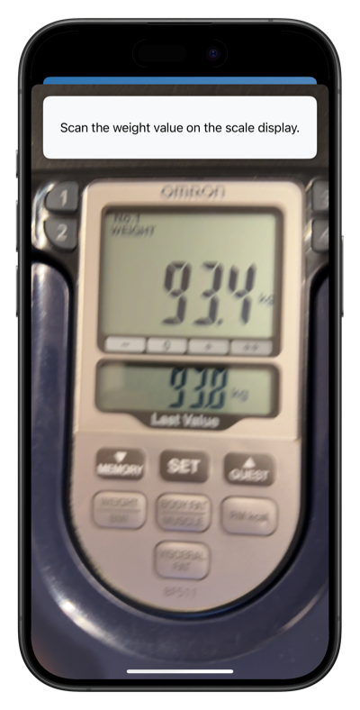
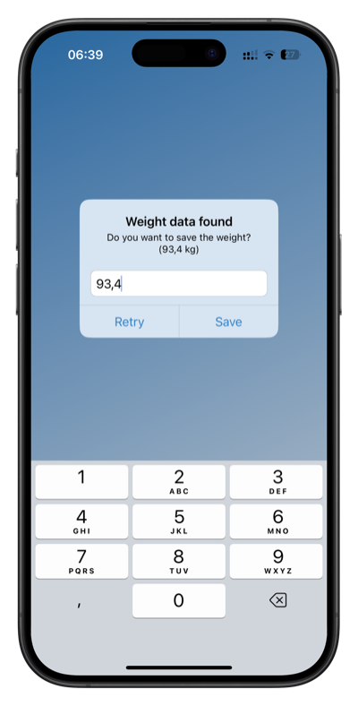
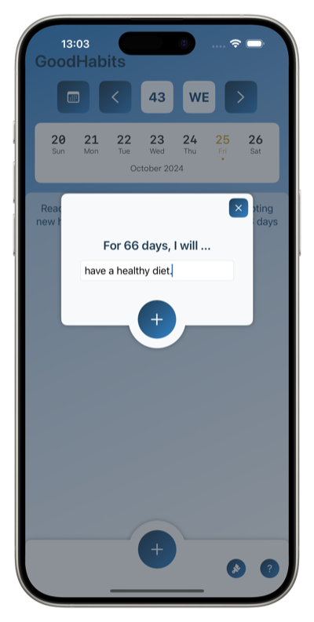
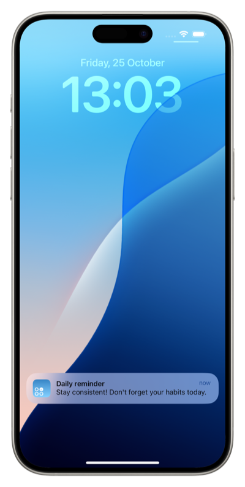
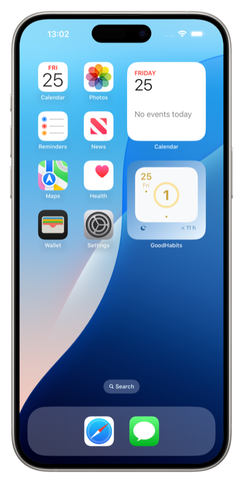
GoodHabits
Bessere Gewohnheiten in 66 Tagen
Ein Proof of Concept zur Erkundung deklarativer Programmierung mit SwiftUI. GoodHabits begleitet dich auf einer 66-tägigen Reise zu besseren Gewohnheiten — mit anpassbaren Zielen, täglichem Tracking, Home-Screen-Widgets und smarten Erinnerungen.
Im App Store ansehenLIVE.STAND
Begleiter für Sitz-Steh-Schreibtische
Eine per Bluetooth verbundene App, die daran erinnert, im Arbeitsalltag zwischen Sitzen und Stehen zu wechseln. Eigenständig entwickelt in Swift (iOS) und Kotlin (Android) mit UIKit, CoreData, CoreBluetooth, SwiftUI, Combine und RxAndroid.
Zum Produkt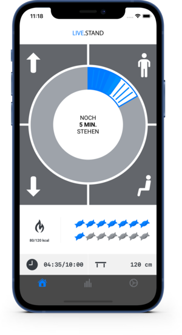
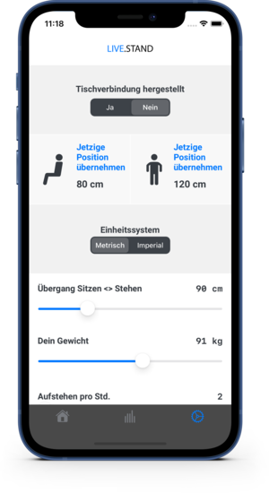
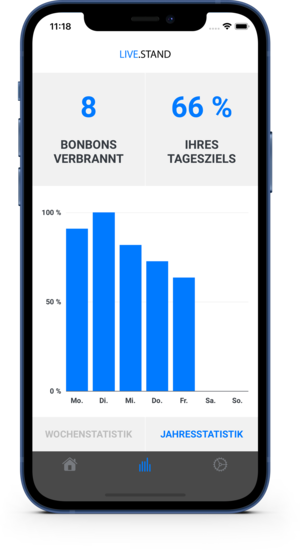
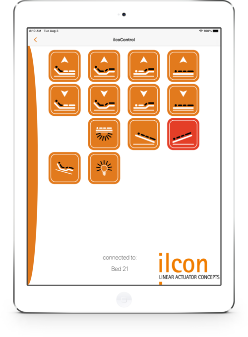
IlcoControl
Bluetooth-Steuerung für Pflegebetten
Eine White-Label-Bluetooth-Steuerungs-App für Pflegebetten mit anpassbarem Corporate Design pro Kunde. Entwickelt in Swift mit UIKit und CoreBluetooth. Meine erste vollständig in Swift geschriebene App.
FlowMeter
Subjektive Flow-Zustände messen
Eine App zur Erfassung subjektiver Flow-Erlebnisse nach der Theorie von Csíkszentmihályi, kombiniert mit Herzfrequenzdaten eines Bluetooth-Brustgurts. Entwickelt in Objective-C mit UIKit, CoreData und CoreBluetooth.
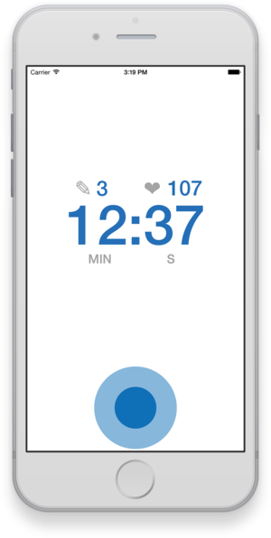
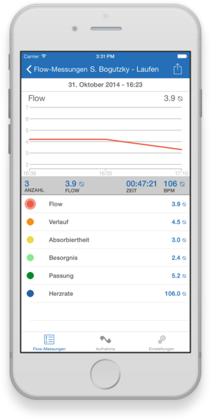
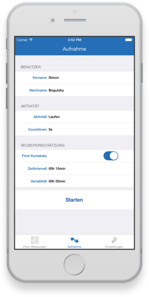
Frühere Arbeiten
Flow Machine
2015Activity-to-Habit-App, die während des Gehens eine Klanglandschaft erzeugt. Entwickelt in Objective-C mit UIKit, MapKit, CoreData, CoreLocation und CoreMotion.
RiderApp
2014Soziales Netzwerk für Trail-Rider. Ich entwickelte die Karteninteraktion mit MapKit, CoreLocation und MapBox. Auftragsarbeit für Noma GmbH.
cubodo
2012Spiel, das virtuelle Pakete über reale Distanzen transportiert. Als Masterprojekt an der HSB Bremen entwickelt, woraus das Startup out there! communication UG hervorging.
GRAVI-T
2010Mobiles Spiel, bei dem Tippen die Schwerkraft umkehrt, um eine Hindernisparcours zu durchqueren. Entwickelt mit Objective-C und der Cocos2D-Engine als universitäres Gruppenprojekt.